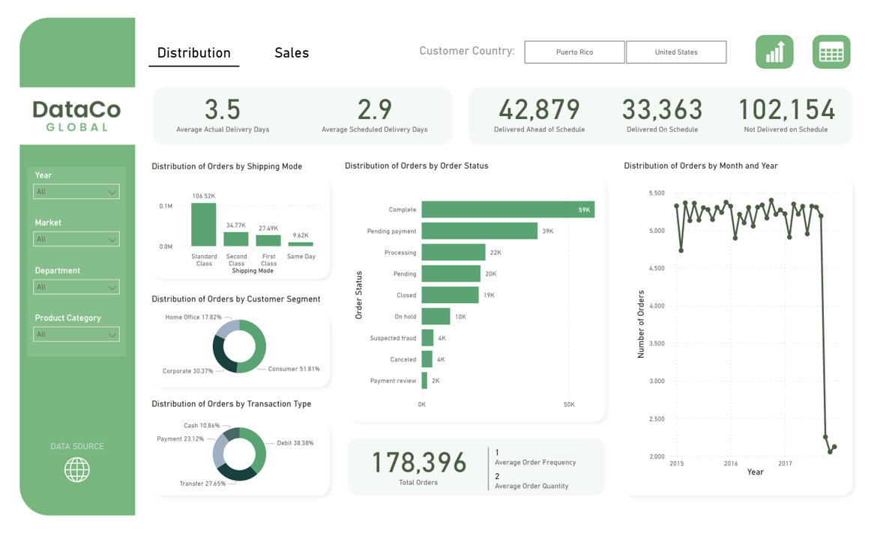
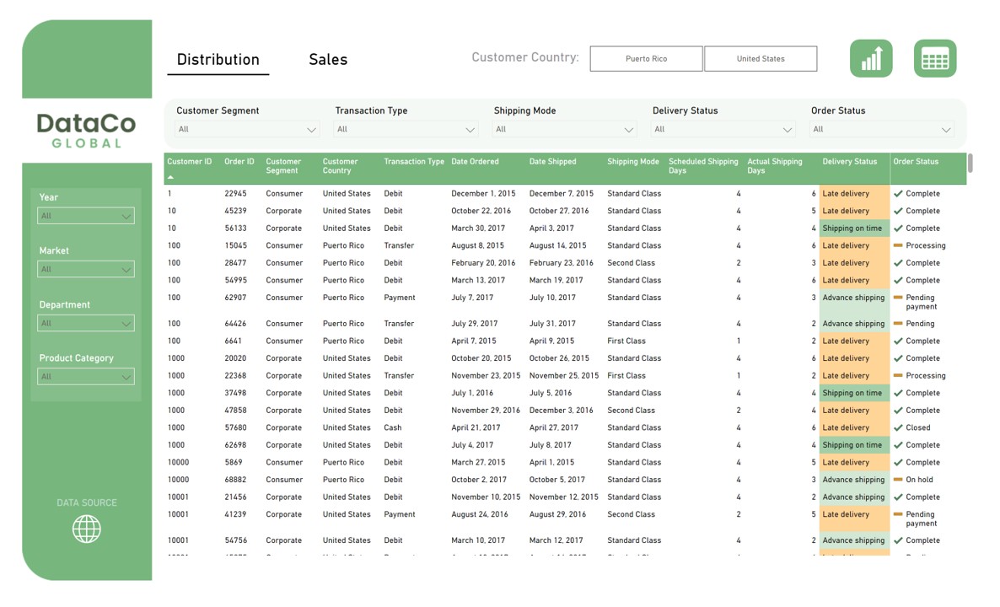
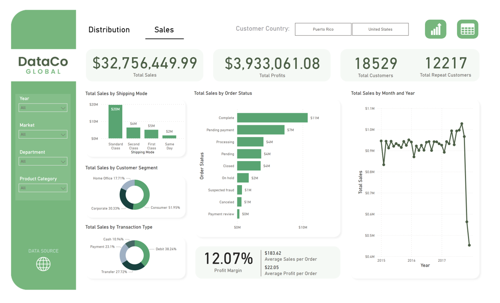
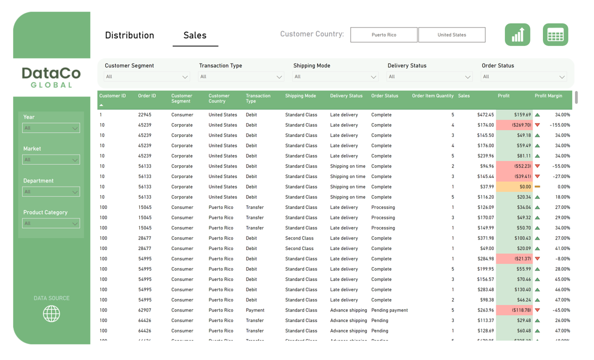

Supply Chain Distribution 🚚
A SQL EDA and Dashboard Project inspired by the DataCo Global Supply Chain Dataset
This project is made as an effort to practice my basic skills in SQL. The dataset, I chose to practice on consists of more than 180,000 records of supply chain activities from DataCo Global. I intend to organize the data into a dashboard to find insights on product distribution and sales across different supply chain categories.
Data cleaning and exploration was primarily done using Microsoft SQL Server and the data is linked to Microsoft Power BI for data visualization.
Data cleaning
/* --------------------------------
DataCo Global Supply Chain Analysis
Data Inspection and Cleaning
----------------------------------*/
-- Inspect table
SELECT *
FROM DataCo..supply_chain;
-- Inspect data types
sp_help 'DataCo..supply_chain';
-- Count the number of columns
SELECT COUNT(*) AS number_of_columns
FROM INFORMATION_SCHEMA.columns
WHERE TABLE_NAME = 'supply_chain';
-- Count the number of rows
SELECT COUNT(*) AS number_of_rows
FROM DataCo..supply_chain;
-- Rename column names
sp_rename 'DataCo..supply_chain.Days_for_shipping_real', 'Actual_Shipping_Days', 'COLUMN';
GO
sp_rename 'DataCo..supply_chain.Days_for_shipment_scheduled', 'Scheduled_Shipping_Days', 'COLUMN';
GO
sp_rename 'DataCo..supply_chain.Benefit_per_order', 'Earnings_per_Order', 'COLUMN';
GO
sp_rename 'DataCo..supply_chain.Sales_per_customer', 'Sales_per_Customer', 'COLUMN';
GO
sp_rename 'DataCo..supply_chain.Late_delivery_risk', 'Late_Delivery_Risk', 'COLUMN';
GO
sp_rename 'DataCo..supply_chain.order_date_DateOrders', 'Order_Date', 'COLUMN';
GO
sp_rename 'DataCo..supply_chain.shipping_date_DateOrders', 'Shipping_Date', 'COLUMN';
GO
sp_rename 'DataCo..supply_chain.Order_Item_Cardprod_Id', 'Order_Item_Card_Id', 'COLUMN';
-- Check and count distinct values in some columns
SELECT DISTINCT DataCo..supply_chain.Late_Delivery_Risk
FROM DataCo..supply_chain;
SELECT DISTINCT DataCo..supply_chain.Product_Status
FROM DataCo..supply_chain;
SELECT
COUNT(DISTINCT DataCo..supply_chain.Customer_Id) AS customer_id,
COUNT(DISTINCT DataCo..supply_chain.Order_Customer_Id) AS order_customer_id,
COUNT(DISTINCT DataCo..supply_chain.Category_Id) AS category_id,
COUNT(DISTINCT DataCo..supply_chain.Product_Category_Id) AS product_category_id,
COUNT(DISTINCT DataCo..supply_chain.Order_Id) AS order_id,
COUNT(DISTINCT DataCo..supply_chain.Order_Item_Id) AS order_item_id,
COUNT(DISTINCT DataCo..supply_chain.Order_Item_Card_Id) AS order_item_card_id,
COUNT(DISTINCT DataCo..supply_chain.Product_Card_Id) AS product_card_id,
COUNT(DISTINCT DataCo..supply_chain.Department_Id) AS department_id
FROM DataCo..supply_chain;
-- Find duplicates
SELECT Customer_Id, Order_Customer_Id, COUNT(*) AS Number_Of_Instances
FROM DataCo..supply_chain
GROUP BY Customer_Id, Order_Customer_Id
HAVING COUNT(*) > 1
ORDER BY Number_Of_Instances DESC;
SELECT Order_Id, COUNT(*) AS Number_Of_Instances
FROM DataCo..supply_chain
GROUP BY Order_Id
HAVING COUNT(*) > 1
ORDER BY Number_Of_Instances DESC;
-- Check columns with null values
SELECT COUNT(*)
FROM DataCo..supply_chain
WHERE DataCo..supply_chain.Order_Zipcode IS NULL
SELECT COUNT(*)
FROM DataCo..supply_chain
WHERE DataCo..supply_chain.Product_Description IS NULL
-- Drop unnecessary columns
ALTER TABLE DataCo..supply_chain
DROP COLUMN Customer_Fname, Customer_Lname, Customer_Email, Customer_Password, Product_Image, Product_Description;
-- Alter data types of some columns
ALTER TABLE DataCo..supply_chain ALTER COLUMN Late_Delivery_Risk NVARCHAR(50);
ALTER TABLE DataCo..supply_chain ALTER COLUMN Product_Status NVARCHAR(50);
ALTER TABLE DataCo..supply_chain ALTER COLUMN Scheduled_Shipping_Days INT;
ALTER TABLE DataCo..supply_chain ALTER COLUMN Actual_Shipping_Days INT;
-- Replace '1' and '0' values in Late_Delivery_Risk and Product_Status columns
UPDATE DataCo..supply_chain
SET DataCo..supply_chain.Late_Delivery_Risk =
CASE
WHEN DataCo..supply_chain.Late_Delivery_Risk = 0 THEN 'Not Late'
ELSE 'Late'
END;
UPDATE DataCo..supply_chain
SET DataCo..supply_chain.Product_Status =
CASE
WHEN DataCo..supply_chain.Product_Status = 0 THEN 'Available'
ELSE 'Not Available'
END;
-- Replace country name 'EE. UU.' to 'United States'
UPDATE DataCo..supply_chain
SET DataCo..supply_chain.Customer_Country = 'United States'
WHERE DataCo..supply_chain.Customer_Country = 'EE. UU.';
-- Replace erroneous values in addresses
SELECT DISTINCT DataCo..supply_chain.Customer_Country, DataCo..supply_chain.Customer_State,
DataCo..supply_chain.Customer_City, DataCo..supply_chain.Customer_Zipcode
FROM DataCo..supply_chain
ORDER BY DataCo..supply_chain.Customer_Country;
UPDATE DataCo..supply_chain
SET DataCo..supply_chain.Customer_Zipcode = '91732', DataCo..supply_chain.Customer_City = 'El Monte',
DataCo..supply_chain.Customer_State = 'CA'
WHERE DataCo..supply_chain.Customer_State = '91732';
UPDATE DataCo..supply_chain
SET DataCo..supply_chain.Customer_Zipcode = '95758', DataCo..supply_chain.Customer_City = 'Elk Grove',
DataCo..supply_chain.Customer_State = 'CA'
WHERE DataCo..supply_chain.Customer_State = '95758';
-- Change state abbreviation to full names
UPDATE DataCo..supply_chain
SET Customer_State = (SELECT DataCo..states.State FROM DataCo..states
WHERE DataCo..states.Abbreviation = DataCo..supply_chain.Customer_State);
-- Limit float to two decimal places for monetary values
ALTER TABLE DataCo..supply_chain ALTER COLUMN Earnings_per_Order DECIMAL(10,2);
ALTER TABLE DataCo..supply_chain ALTER COLUMN Sales_per_Customer DECIMAL(10,2);
ALTER TABLE DataCo..supply_chain ALTER COLUMN Order_Item_Discount DECIMAL(10,2);
ALTER TABLE DataCo..supply_chain ALTER COLUMN Order_Item_Discount_Rate DECIMAL(10,4);
ALTER TABLE DataCo..supply_chain ALTER COLUMN Order_Item_Product_Price DECIMAL(10,2);
ALTER TABLE DataCo..supply_chain ALTER COLUMN Order_Item_Profit_Ratio DECIMAL(10,4);
ALTER TABLE DataCo..supply_chain ALTER COLUMN Sales DECIMAL(10,2);
ALTER TABLE DataCo..supply_chain ALTER COLUMN Order_Item_Total DECIMAL(10,2);
ALTER TABLE DataCo..supply_chain ALTER COLUMN Order_Profit_Per_Order DECIMAL(10,2);
ALTER TABLE DataCo..supply_chain ALTER COLUMN Product_Price DECIMAL(10,2);
-- Change values in uppercase to proper case
UPDATE DataCo..supply_chain
SET DataCo..supply_chain.Type = UPPER(SUBSTRING(DataCo..supply_chain.Type, 1, 1)) +
LOWER(SUBSTRING(DataCo..supply_chain.Type, 2, LEN(DataCo..supply_chain.Type) - 1));
UPDATE DataCo..supply_chain
SET DataCo..supply_chain.Order_Status = UPPER(SUBSTRING(DataCo..supply_chain.Order_Status, 1, 1)) +
LOWER(SUBSTRING(DataCo..supply_chain.Order_Status, 2, LEN(DataCo..supply_chain.Order_Status) - 1));
-- Clean values in Order_Status column
SELECT DISTINCT DataCo..supply_chain.Order_Status
FROM DataCo..supply_chain;
UPDATE DataCo..supply_chain
SET DataCo..supply_chain.Order_Status =
CASE
WHEN DataCo..supply_chain.Order_Status = 'Complete' THEN 'Complete'
WHEN DataCo..supply_chain.Order_Status = 'Pending' THEN 'Pending'
WHEN DataCo..supply_chain.Order_Status = 'Closed' THEN 'Closed'
WHEN DataCo..supply_chain.Order_Status = 'Payment_review' THEN 'Payment review'
WHEN DataCo..supply_chain.Order_Status = 'Suspected_fraud' THEN 'Suspected fraud'
WHEN DataCo..supply_chain.Order_Status = 'On_hold' THEN 'On hold'
WHEN DataCo..supply_chain.Order_Status = 'Processing' THEN 'Processing'
WHEN DataCo..supply_chain.Order_Status = 'Canceled' THEN 'Canceled'
ELSE 'Pending payment'
END;
-- Separate datetime values
SELECT DataCo..supply_chain.Order_Date, DataCo..supply_chain.Shipping_Date
FROM DataCo..supply_chain;
ALTER TABLE DataCo..supply_chain ADD Date_Ordered DATE;
ALTER TABLE DataCo..supply_chain ADD Date_Shipped DATE;
ALTER TABLE DataCo..supply_chain ADD Time_Ordered TIME;
ALTER TABLE DataCo..supply_chain ADD Time_Shipped TIME;
UPDATE DataCo..supply_chain SET
Date_Ordered = CONVERT(date, Order_Date),
Date_Shipped = CONVERT(date, Shipping_Date),
Time_Ordered = CONVERT(TIME(0), Order_Date),
Time_Shipped = CONVERT(TIME(0), Shipping_Date)
ALTER TABLE DataCo..supply_chain DROP COLUMN Order_Date, Shipping_Date;
-- Add shipping time variance column based on difference between actual and scheduled shipping days
ALTER TABLE DataCo..supply_chain ADD Shipping_Time_Variance NVARCHAR(50);
UPDATE DataCo..supply_chain
SET DataCo..supply_chain.Shipping_Time_Variance =
CASE
WHEN (Actual_Shipping_Days - Scheduled_Shipping_Days) = 0 THEN 'On schedule'
WHEN (Actual_Shipping_Days - Scheduled_Shipping_Days) > 0 THEN 'Not on schedule'
ELSE 'Ahead of schedule'
END;
-- Check final cleaned table
SELECT * FROM DataCo..supply_chain;Data exploration
/* ---------------------------------
DataCo Global Supply Chain Analysis
Data Exploration and Analysis
----------------------------------*/
SELECT * FROM DataCo..supply_chain;
-- How many months are included for each year?
SELECT YEAR(Date_Ordered) AS Year, COUNT(DISTINCT MONTH(Date_Ordered)) AS Count_Months
FROM DataCo..supply_chain
GROUP BY YEAR(Date_Ordered);
/* -------
Inventory
---------*/
--Are there unavailable products in the inventory?
SELECT DISTINCT Product_Status
FROM DataCo..supply_chain;
/* ---------
Distribution
-----------*/
-- What is the difference between scheduled and actual shipping time (days)?
SELECT AVG(Scheduled_Shipping_Days) AS Average_Scheduled_Days,
AVG(Actual_Shipping_Days) AS Average_Actual_Days
FROM DataCo..supply_chain
WHERE YEAR(Date_Ordered) <> 2018;
-- What is the distirbution or percentage of orders based on shipping time variance?
(Actual Shipping Days - Scheduled Shipping Days)
SELECT Shipping_Time_Variance,
COUNT(*) AS Order_Count, COUNT(*) * 100.00 / SUM(COUNT(*)) OVER() AS Order_Rate
FROM DataCo..supply_chain
WHERE YEAR(Date_Ordered) <> 2018
GROUP BY Shipping_Time_Variance
ORDER BY 3 DESC;
-- What is the distirbution or percentage of orders based on delivery status and order status?
SELECT Delivery_Status, Order_Status,
COUNT(*) AS Order_Count, COUNT(*) * 100.00 / SUM(COUNT(*)) OVER() AS Order_Rate
FROM DataCo..supply_chain
WHERE YEAR(Date_Ordered) <> 2018
GROUP BY Delivery_Status, Order_Status
ORDER BY 4 DESC;
-- What is the distribution or percentage of orders delivered by market?
SELECT Market, COUNT(*) AS Order_Count, COUNT(*) * 100.00 / SUM(COUNT(*)) OVER() AS Order_Rate
FROM DataCo..supply_chain
WHERE YEAR(Date_Ordered) <> 2018
GROUP BY Market
ORDER BY 3 DESC;
-- What is the distribution or percentage of late orders by market (including late cancelled orders)?
SELECT Market, COUNT(*) AS Order_Count,
COUNT(CASE WHEN Shipping_Time_Variance =
'Not on schedule' THEN 1 END) AS Late_Order_Count,
COUNT(CASE WHEN Shipping_Time_Variance =
'Not on schedule' THEN 1 END) * 100.00 / COUNT(*) AS Late_Delivery_Rate
FROM DataCo..supply_chain
WHERE YEAR(Date_Ordered) <> 2018
GROUP BY Market
HAVING COUNT(CASE WHEN Shipping_Time_Variance = 'Not on schedule' THEN 1 END) > 0
ORDER BY 4 DESC;
-- What is the distribution or percentage of orders delivered by shipping mode?
SELECT Shipping_Mode, COUNT(*) AS Order_Count, COUNT(*) * 100.00 / SUM(COUNT(*)) OVER() AS Order_Rate
FROM DataCo..supply_chain
WHERE YEAR(Date_Ordered) <> 2018
GROUP BY Shipping_Mode
ORDER BY 3 DESC;
-- What is the distribution or percentage of late orders by shipping mode (including late cancelled orders)?
SELECT Shipping_Mode, COUNT(*) AS Order_Count,
COUNT(CASE WHEN Shipping_Time_Variance =
'Not on schedule' THEN 1 END) AS Late_Order_Count,
COUNT(CASE WHEN Shipping_Time_Variance =
'Not on schedule' THEN 1 END) * 100.00 / COUNT(*) AS Late_Delivery_Rate
FROM DataCo..supply_chain
WHERE YEAR(Date_Ordered) <> 2018
GROUP BY Shipping_Mode
HAVING COUNT(CASE WHEN Shipping_Time_Variance = 'Not on schedule' THEN 1 END) > 0
ORDER BY 4 DESC;
-- What is the distribution or percentage of late orders by store department (including late cancelled orders)?
SELECT Department_Name, COUNT(*) AS Order_Count,
COUNT(CASE WHEN Shipping_Time_Variance =
'Not on schedule' THEN 1 END) AS Late_Order_Count,
COUNT(CASE WHEN Shipping_Time_Variance =
'Not on schedule' THEN 1 END) * 100.00 / COUNT(*) AS Late_Delivery_Rate
FROM DataCo..supply_chain
WHERE YEAR(Date_Ordered) <> 2018
GROUP BY Department_Name
HAVING COUNT(CASE WHEN Shipping_Time_Variance = 'Not on schedule' THEN 1 END) > 0
ORDER BY 4 DESC;
-- What is the distribution or percentage of late orders by product category (including late cancelled orders)?
SELECT Category_Name, COUNT(*) AS Order_Count,
COUNT(CASE WHEN Shipping_Time_Variance =
'Not on schedule' THEN 1 END) AS Late_Order_Count,
COUNT(CASE WHEN Shipping_Time_Variance =
'Not on schedule' THEN 1 END) * 100.00 / COUNT(*) AS Late_Delivery_Rate
FROM DataCo..supply_chain
WHERE YEAR(Date_Ordered) <> 2018
GROUP BY Category_Name
HAVING COUNT(CASE WHEN Shipping_Time_Variance = 'Not on schedule' THEN 1 END) > 0
ORDER BY 4 DESC;
-- What is the distribution or percentage of late orders by customer segment (including late cancelled orders)?
SELECT Customer_Segment, COUNT(*) AS Order_Count,
COUNT(CASE WHEN Shipping_Time_Variance =
'Not on schedule' THEN 1 END) AS Late_Order_Count,
COUNT(CASE WHEN Shipping_Time_Variance =
'Not on schedule' THEN 1 END) * 100.00 / COUNT(*) AS Late_Delivery_Rate
FROM DataCo..supply_chain
WHERE YEAR(Date_Ordered) <> 2018
GROUP BY Customer_Segment
HAVING COUNT(CASE WHEN Shipping_Time_Variance = 'Not on schedule' THEN 1 END) > 0
ORDER BY 4 DESC;
-- What is the distribution or percentage of late orders by transaction type (including late cancelled orders)?
SELECT Type, COUNT(*) AS Order_Count,
COUNT(CASE WHEN Shipping_Time_Variance =
'Not on schedule' THEN 1 END) AS Late_Order_Count,
COUNT(CASE WHEN Shipping_Time_Variance =
'Not on schedule' THEN 1 END) * 100.00 / COUNT(*) AS Late_Delivery_Rate
FROM DataCo..supply_chain
WHERE YEAR(Date_Ordered) <> 2018
GROUP BY Type
HAVING COUNT(CASE WHEN Shipping_Time_Variance = 'Not on schedule' THEN 1 END) > 0
ORDER BY 4 DESC;
/* ---
Sales
-----*/
-- Select columns related to sales
SELECT Earnings_per_Order, Sales_per_Customer, Order_Item_Discount, Order_Item_Discount_Rate,
Order_Item_Product_Price, Order_Item_Profit_Ratio, Order_Item_Quantity, Sales, Order_Item_Total,
Order_Profit_Per_Order, Product_Price
FROM DataCo..supply_chain;
-- Total Sales
SELECT SUM(Sales) AS Total_Sales
FROM DataCo..supply_chain
WHERE YEAR(Date_Ordered) <> 2018;
-- Total Sales per Customer
SELECT SUM(Sales_per_Customer) AS Total_Customer_Sales
FROM DataCo..supply_chain
WHERE YEAR(Date_Ordered) <> 2018;
-- Average Sales per Customer
SELECT ROUND(SUM(Sales_per_Customer) / COUNT(*), 2) AS Sales_Per_Customer
FROM DataCo..supply_chain
WHERE YEAR(Date_Ordered) <> 2018;
-- Total Earnings from Orders
SELECT SUM(Earnings_per_Order) AS Total_Order_Earnings
FROM DataCo..supply_chain
WHERE YEAR(Date_Ordered) <> 2018;
-- Average Earnings per Order
SELECT ROUND(SUM(Earnings_per_Order) / COUNT(*), 2) AS Earnings_Per_Order
FROM DataCo..supply_chain
WHERE YEAR(Date_Ordered) <> 2018;
-- Total Orders
SELECT COUNT(DISTINCT Order_Item_Id) AS Total_Orders
FROM DataCo..supply_chain
WHERE YEAR(Date_Ordered) <> 2018;
-- Total Sales Growth
SELECT CurrentYr.Year AS Year, CurrentYr.Total_Sales AS Current_Year_Sales,
PreviousYr.Total_Sales AS Previous_Year_Sales,
(CurrentYr.Total_Sales - PreviousYr.Total_Sales) /
PreviousYr.Total_Sales * 100.00 AS Total_Sales_Growth
FROM (
SELECT YEAR(Date_Ordered) AS Year, SUM(Sales) AS Total_Sales
FROM DataCo..supply_chain
WHERE YEAR(Date_Ordered) <> 2018
GROUP BY YEAR(Date_Ordered)
) AS PreviousYr
JOIN
(
SELECT YEAR(Date_Ordered) AS Year, SUM(Sales) AS Total_Sales
FROM DataCo..supply_chain
WHERE YEAR(Date_Ordered) <> 2018
GROUP BY YEAR(Date_Ordered)
) AS CurrentYr ON PreviousYr.Year + 1 = CurrentYr.Year
ORDER BY PreviousYr.Year;
-- Average Order Value
SELECT ROUND(SUM(Sales) / COUNT(*), 2) AS Average_Order_Value
FROM DataCo..supply_chain
WHERE YEAR(Date_Ordered) <> 2018;
-- Profit Margin
SELECT ROUND(AVG(Order_Item_Profit_Ratio), 4) * 100.00 AS Profit_Margin
FROM DataCo..supply_chain
WHERE YEAR(Date_Ordered) <> 2018;
-- Average Order Frequency
SELECT ROUND(SUM(Order_Item_Quantity) / COUNT(*), 0) AS Order_Size
FROM DataCo..supply_chain
WHERE YEAR(Date_Ordered) <> 2018;
-- Other Questions
-- How many are repeat customers?
SELECT COUNT(*) AS Total_Repeat_Customers
FROM (
SELECT Customer_Id, Order_Customer_Id, COUNT(*) AS Number_Of_Instances
FROM DataCo..supply_chain
GROUP BY Customer_Id, Order_Customer_Id
HAVING COUNT(*) > 1
) AS repeat_customers;
-- What is the total sales, order count, and total product quantity sold by each department?
SELECT Department_Name, SUM(Sales_per_Customer) AS Total_Customer_Sales,
COUNT(*) AS Order_Count, SUM(Order_Item_Quantity) AS Product_Quantity_Sold
FROM DataCo..supply_chain
WHERE YEAR(Date_Ordered) <> 2018
GROUP BY Department_Name
ORDER BY Total_Customer_Sales DESC;
-- What is the total sales, order count, and total product quantity sold by each product category?
SELECT Category_Name, SUM(Sales_per_Customer) AS Total_Customer_Sales,
COUNT(*) AS Order_Count, SUM(Order_Item_Quantity) AS Product_Quantity_Sold
FROM DataCo..supply_chain
WHERE YEAR(Date_Ordered) <> 2018
GROUP BY Category_Name
ORDER BY Total_Customer_Sales DESC;
-- What is the total sales, order count, and total product quantity sold by each customer segment?
SELECT Customer_Segment, SUM(Sales_per_Customer) AS Total_Customer_Sales,
COUNT(*) AS Order_Count, SUM(Order_Item_Quantity) AS Product_Quantity_Sold
FROM DataCo..supply_chain
WHERE YEAR(Date_Ordered) <> 2018
GROUP BY Customer_Segment
ORDER BY Total_Customer_Sales DESC;
-- What is the total sales, order count, and total product quantity sold by each market?
SELECT Market, SUM(Sales_per_Customer) AS Total_Customer_Sales,
COUNT(*) AS Order_Count, SUM(Order_Item_Quantity) AS Product_Quantity_Sold
FROM DataCo..supply_chain
WHERE YEAR(Date_Ordered) <> 2018
GROUP BY Market
ORDER BY Total_Customer_Sales DESC;
-- What is the total sales, order count, and total product quantity sold by each type of transaction?
SELECT Type, SUM(Sales_per_Customer) AS Total_Customer_Sales,
COUNT(*) AS Order_Count, SUM(Order_Item_Quantity) AS Product_Quantity_Sold
FROM DataCo..supply_chain
WHERE YEAR(Date_Ordered) <> 2018
GROUP BY Type
ORDER BY Total_Customer_Sales DESC;
-- How much sales can be potentially lost because of cancelled shipping and suspected fraud?
SELECT Delivery_Status, Order_Status, SUM(Sales_per_Customer) AS Total_Customer_Sales,
COUNT(*) AS Order_Count, SUM(Order_Item_Quantity) AS Product_Quantity_Sold
FROM DataCo..supply_chain
WHERE Delivery_Status = 'Shipping canceled' AND YEAR(Date_Ordered) <> 2018
GROUP BY Delivery_Status, Order_Status
ORDER BY Total_Customer_Sales DESC;Data visualization
The final Microsoft Power BI dashboard file can be downloaded here. The dashboard views below show the overview of distribution and sales of the company.
   